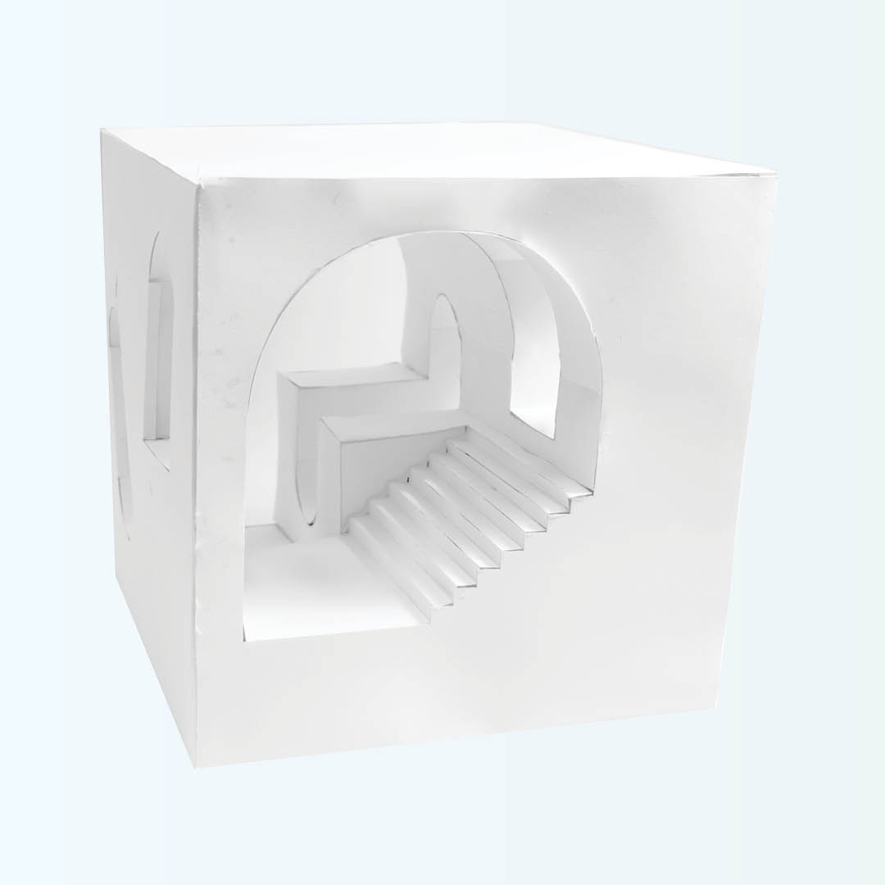
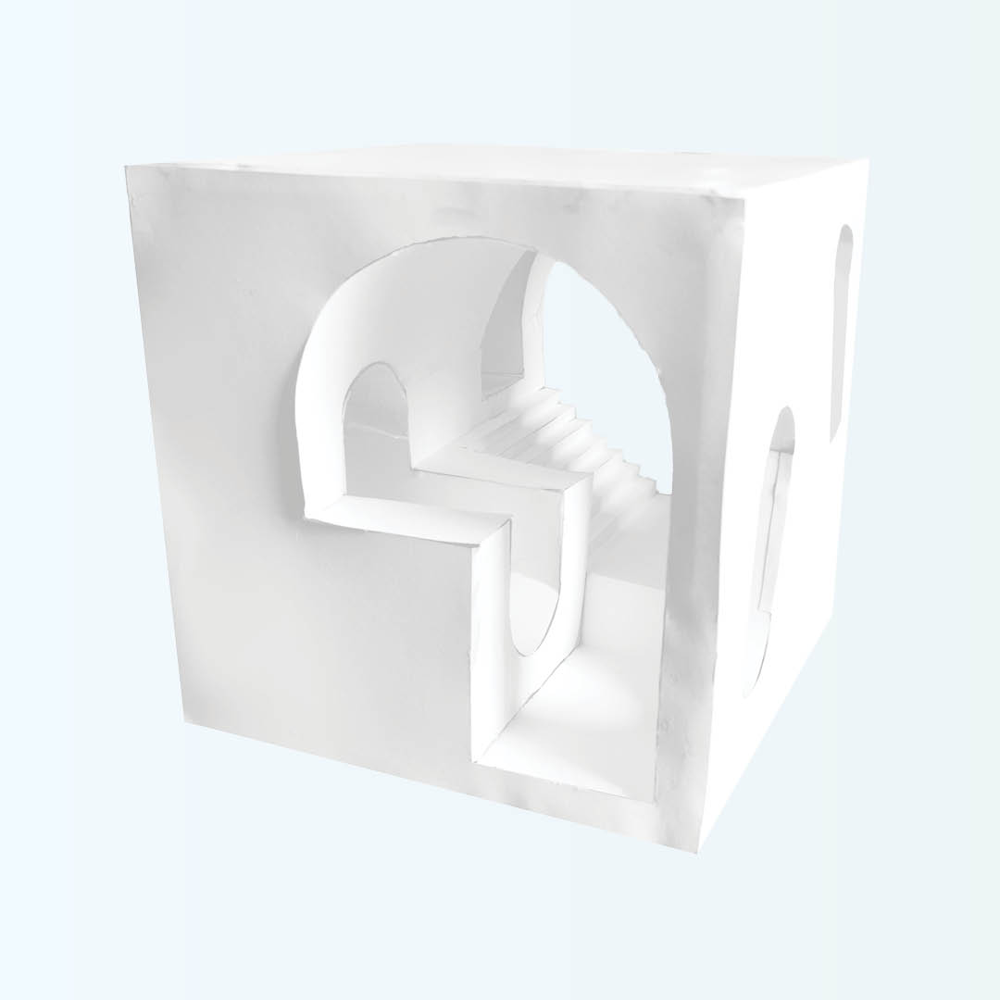
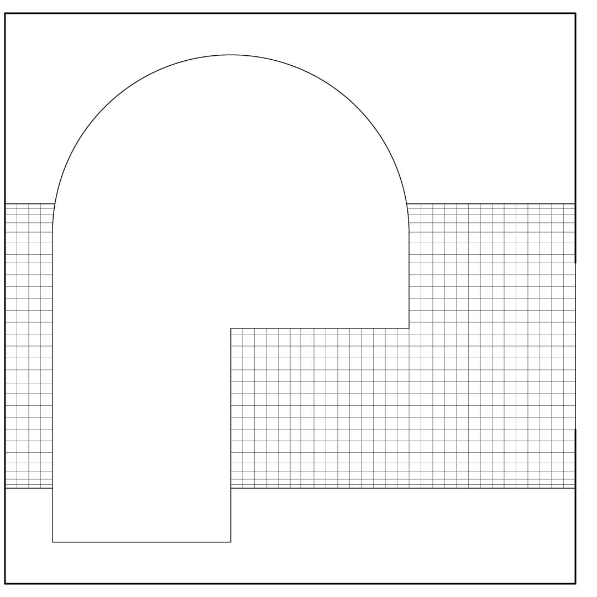
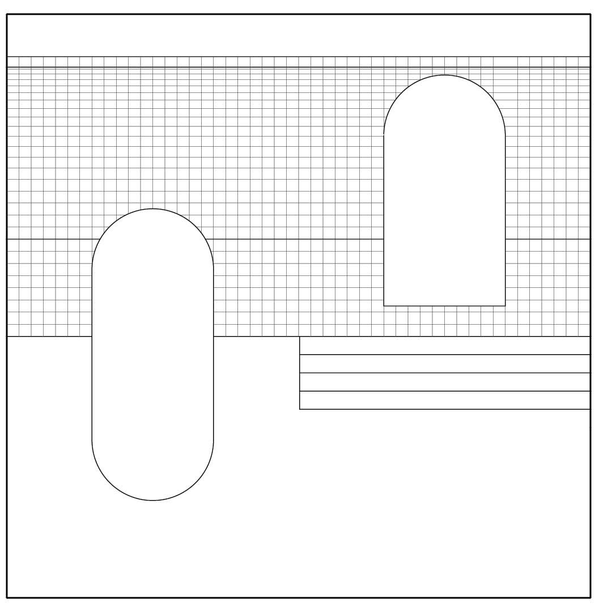
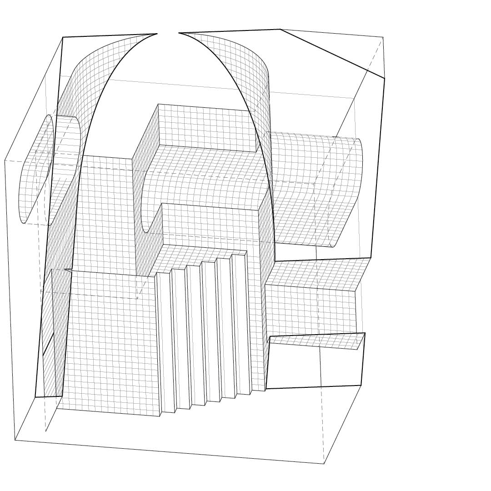
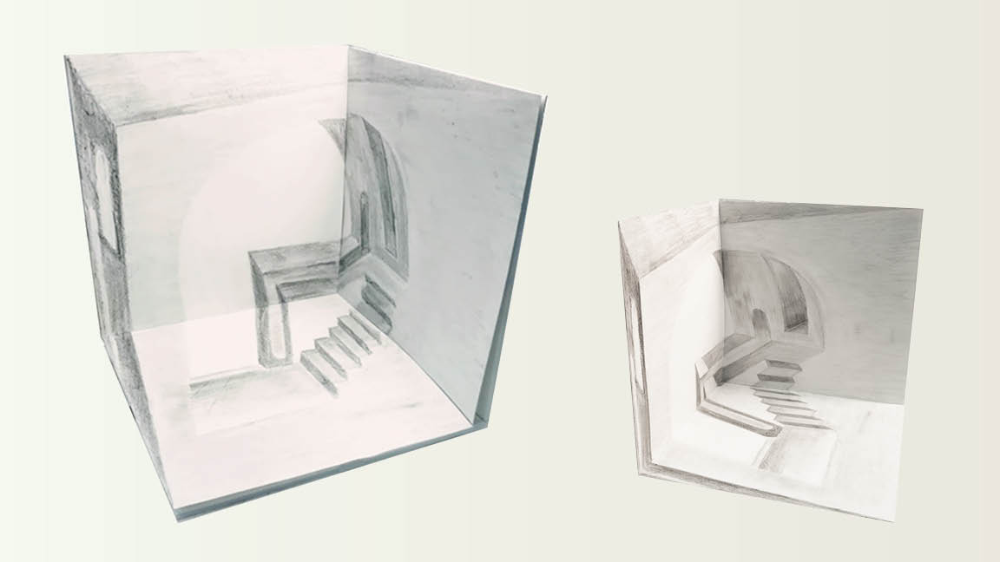

Architectural Projection
 
The cubic model is my portion of a large underground water system constructed with peers. The cube is a model-making exercise dealing with stairs, curves, and wall thickness. From this model came others shown below.

Above is a "light path reconstruction" model. Fitting physically into the original cube, the solid here maps how light enters from a specific angle.
 

Above are three section cuts, including an oblique one, showing curvature through material line.

The model above shows where section cuts are drawn. The model is entirely self-structural, using no adhesive.

Above is an anamorphic drawing of the cube shown on- and off-axis.
Architectural Projection, RISD. Fall 2018.